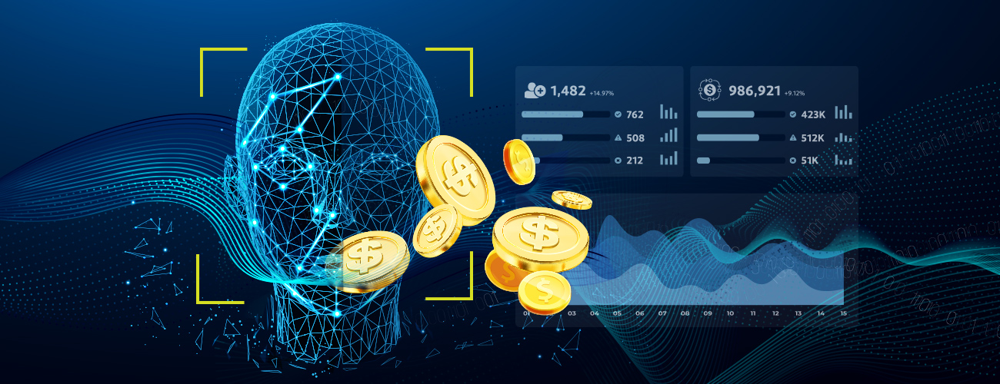

Inglês
Inglês Espanhol
EspanholVoltar para Notícias e Artigos


Dados & Transações:
4 estratégias orientadas por dados para reforçar o monitoramento transacional.
O mercado de pagamentos digitais deve crescer 11,8% entre 2023 e 2027, alcançando um valor de mercado global de US$ 14,79 trilhões até 2027. Essa rápida expansão complica a conformidade regulatória e o gerenciamento das expectativas sempre mutáveis dos clientes, além de aumentar a pressão para evitar atividades fraudulentas. Métodos tradicionais de monitoramento de risco são insuficientes; a defesa contra fraude requer mais do que vigilância, ela exige precisão orientada por dados para inaugurar uma nova era de segurança proativa.
Comerciantes globalmente destinam cerca de 11% da receita anual para combater fraudes de pagamento. Um relatório de fraude de 2023 revela que 60% dos comerciantes visam reduzir revisões manuais na prevenção de fraudes. Este artigo delineia quatro estratégias inovadoras orientadas por dados que estão revolucionando o setor de Fintech. Todas elas aprimoram o monitoramento de transações e a defesa contra fraudes, promovendo assim um cenário financeiro digital mais seguro e estável que constrói confiança, lealdade e crescimento de receita por parte do cliente.
1. Aproveite o Poder da Agregação de Dados de Múltiplas Fontes
No complexo ecossistema financeiro de hoje, uma segurança robusta depende de dados profundos. KYC em múltiplos níveis, combinado com um motor de análise de risco automatizado e tecnologias de monitoramento líderes, amalgama dados de identificação com insights de engajamento para fornecer um quadro abrangente de risco em uma plataforma centralizada. Essa fusão de dados não se trata apenas de conhecer seus clientes; é sobre entender o comportamento deles e prever fraudes potenciais com precisão incomparável.
Soluções de orquestração de dados como a AcuityTec permitem que as empresas obtenham sem problemas todo o KYC de que precisam, complementado por monitoramento transacional em tempo real e análise de risco. Eliminando o incômodo de múltiplas integrações de API, reduz a pressão sobre os recursos de desenvolvedores, simplifica o gerenciamento de fornecedores de dados e reduz os custos gerais de dados.
Esta abordagem unificada contrapõe a natureza fragmentada da análise de risco tradicional. Ela agrupa dados de KYC, comportamentos do cliente e histórico de transações para produzir insights mais rápidos e precisos, impulsionados pela sinergia de dados.
2. Adote KYC Perpétuo
Uma verdade incontestável ecoa na dinâmica paisagem online: o KYC não pode mais ser implementado como um esforço único e limitado aos processos de integração. As mudanças nas táticas de fraude financeira exigem uma mudança para o KYC Perpétuo para proteção contínua contra fraudadores avançados. A Diretiva Revisada da UE sobre Serviços de Pagamento (PSD2) para prestadores de serviços de pagamento mudou para o requisito regulatório de manter autenticação segura do cliente (SCA) para reduzir o risco de fraude em pagamentos online e já teve um impacto significativo na redução da fraude.
O poder do KYC Perpétuo reside em sua função de processar a comprovação de identidade desde o processo de integração até as transações contínuas. A integração em um hub de orquestração de dados com defesa dinâmica contra fraudes permite que as organizações obtenham sem problemas o KYC Perpétuo, análise avançada de riscos e monitoramento em tempo real, insights comportamentais e tendências para identificar e neutralizar facilmente qualquer vulnerabilidade de atores maliciosos. Esta abordagem garante que as empresas sejam ágeis em meio a regulamentações em mudança e permite uma transição tranquila de revisões periódicas para avaliações dinâmicas e contínuas dos clientes para conformidade perpétua.
De acordo com a pesquisa da PYMNTS, empresas que contam com métodos legados, reativos e manuais de verificação de identidade digital para cumprir regulamentações experimentam uma perda significativa de 4,5% nas vendas anuais devido à fraude. Em contraste, empresas que adotam soluções proativas e automatizadas, alavancando o KYC Perpétuo e tecnologias como aprendizado de máquina, conseguem reduzir sua perda de fraude para um valor consideravelmente menor de 2,3%.
Finalmente, quanto mais dados de KYC você coleta, mais robusto se torna seu motor de risco na identificação de padrões e tendências comportamentais. Esses dados enriquecidos permitem que as empresas aumentem com confiança os volumes de transações para clientes verificados e confiáveis, melhorando assim tanto a segurança quanto o potencial de receita.
As empresas devem adotar o KYC Perpétuo como parte fundamental de sua estratégia de segurança em evolução para se manterem à frente das ameaças emergentes e realmente interromper o impacto da fraude em suas receitas.
3. Processe Análise de Risco de Dados em Tempo Real
Quando as transações ocorrem à velocidade da luz, esperar até mesmo alguns minutos para processar dados e análise de risco pode criar uma lacuna suficiente para que os fraudadores escapem. Um relatório da Juniper previu que as empresas perderão mais de $343 bilhões globalmente com fraude em pagamentos online entre 2023 e 2027. Uma defesa eficaz contra fraudes reside no processamento de dados e análise de risco em tempo real para fornecer instantaneamente as pontuações de risco necessárias para avaliar a legitimidade das transações à medida que ocorrem. As empresas podem melhorar seus tempos de reação a fraudes para reduzir significativamente a perda de receita para fraudadores.
Provedores como AcuityTec são projetados para avançar nas operações de análise de risco, permitindo que as empresas configurem limites de risco personalizados para suas categorias de pontuação de risco, dependendo do seu apetite ao risco. Além disso, os parâmetros de segurança podem ser ajustados dinamicamente em resposta a riscos emergentes para redirecionar automaticamente para verificações adicionais ou pausar transações antes do processamento.
Em essência, a combinação de processamento de dados em tempo real e análise de risco cria um mecanismo de defesa formidável, adaptável e proativo.
4. Aproveite o Aprendizado de Máquina
a. Reconhecimento de Padrões e Detecção de Anomalias: Algoritmos de aprendizado de máquina podem peneirar grandes volumes de dados transacionais para identificar padrões estabelecidos associados a atividades fraudulentas. Isso pode incluir comportamentos suspeitos conhecidos, como múltiplas transações rápidas em um curto espaço de tempo ou tentativas de disfarçar grandes transferências como pequenas e inconspícuas. Igualmente importante é a capacidade do sistema em realizar a detecção de anomalias.
AcuityTec combina o melhor dos dois mundos com um sistema tradicional baseado em regras, com milhares de parâmetros e configurações infinitas, e aprendizado de máquina para se adaptar a tendências emergentes e identificar padrões ou anomalias anteriormente não vistos que possam indicar novos tipos de fraude. Esta adaptabilidade dinâmica é indispensável para se manter à frente de fraudadores cada vez mais sofisticados.
b. Análise de Comportamento: Ao processar, analisar e orquestrar automaticamente dados do comportamento típico de usuários legítimos - como os tamanhos usuais de suas transações, método transacional e até os horários do dia em que são mais ativos - você obtém perfis de clientes mais robustos com bases para novas transações serem avaliadas.
Desvios desses perfis, como uma localização de login incomum ou uma mudança abrupta nos hábitos de transação, podem ser imediatamente sinalizados em tempo real para investigação adicional. As empresas podem detectar imediatamente tipos de fraude como a apropriação de contas, que cresceu 121% em 2022 e sofreu perdas superiores a $11,4 bilhões apenas nos EUA, ou fraude de explosão, onde a detecção rápida pode significar a diferença entre impedir uma transação fraudulenta e sofrer uma perda financeira substancial.
c. Associações de Contas: Reforce ainda mais os esforços de prevenção de fraudes ao vincular contas com atributos comuns, como ID de dispositivo, endereço IP, e-mail ou padrões comportamentais; o sistema pode criar uma visão holística da atividade do usuário. Essa rede de associações facilita a detecção de anomalias ou conexões suspeitas, aprimorando os modelos de aprendizado de máquina e análise de comportamento já em vigor.
Em Conclusão
A prevenção de fraudes na era digital requer uma abordagem multifacetada que integra tecnologias e metodologias avançadas. AcuityTec oferece uma solução abrangente que engloba todas essas estratégias e é fácil de integrar com apenas uma API. Com AcuityTec, você está adotando um mecanismo de defesa inteligente e em constante evolução que se adapta continuamente às tendências emergentes de fraude e é projetado para proteger o seu negócio agora e no futuro.
Explore mais sobre os dados de KYC da AcuityTec, a triagem de fraude e o monitoramento de transações hoje mesmo ou veja em ação e reserve uma demonstração.